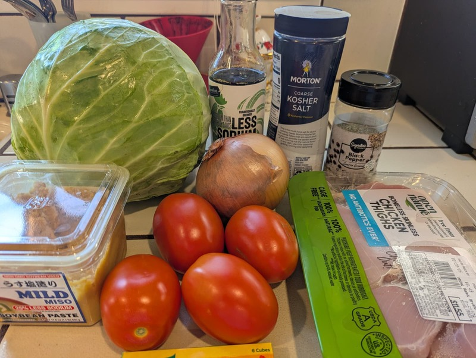
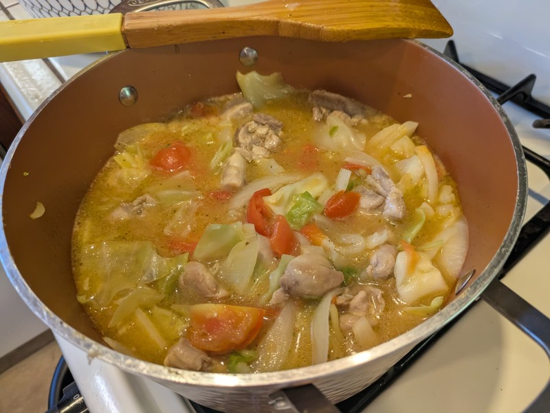

Toriniku no Tomato Nikomi (鶏肉のトマト煮込み)
Chicken and Tomato Stew
 
This is a classic Japanese “home cooking” style stew—it’s lighter and more soup-like than a thick Italian ragu.
Japanese Chicken & Tomato Stew (Claire Akibaa Style)
This recipe focuses on chicken thighs, tomatoes, onion, cabbage, and bouillon.
Ingredients
Chicken: 1 lb (500g) chicken thighs, cut into bite-sized pieces
Vegetables: - 1 medium onion (sliced) - 1⁄2 head of cabbage (chopped into large chunks) - 2-3 large fresh tomatoes (diced) or 1 can of crushed tomatoes
Liquid/Base: - 2 chicken bouillon cubes - 2 cups of water
Seasoning: - 1 tbsp soy sauce - 1 tsp sugar (to balance the tomato acidity) - Salt and black pepper
Optional: - 1 clove garlic (minced) - A splash of sake or white wine
Instructions
Sear the Chicken: In a large pot or Dutch oven, heat a little oil over medium-high heat. Season the chicken thighs with salt and pepper, then brown them on all sides. You don’t need to cook them through yet; just get some color.
Sauté Aromatics: Add the sliced onions (and garlic, if using) to the pot. Sauté until the onions are translucent and slightly softened.
Build the Stew: Add the tomatoes and the chopped cabbage. Stir to combine with the chicken and onions.
Simmer: Pour in the water and add the chicken bouillon cubes. If you have sake, add a splash now to deepen the “umami” flavor.
Cook: Bring the mixture to a boil, then reduce the heat to low. Cover and simmer for about 15–20 minutes, or until the cabbage is tender and the chicken is fully cooked.
Final Seasoning: Stir in the soy sauce and sugar. Taste and add more salt or pepper if needed.
Pro-Tips for an Authentic Taste
Cabbage Size: Don’t chop the cabbage too small. Keeping it in large, rustic chunks (as seen in the video) allows it to soak up the tomato broth without turning into mush.
Richness: For a richer flavor, some Japanese home cooks add a tablespoon of miso paste or a small knob of butter at the very end to give the broth a velvety finish.